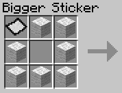

RubiksCraft
RubiksCraft is a mod for Minecraft 1.3.1 I wrote in Java by myself with different Rubik's Cube related features. The mod has two parts, a cube simulator and an automatic cube builder. The cube simulator supplies a GUI that the player can solve a Rubik's Cube. The cube builder automatically builds woolen Rubik's Cube structures.
Video Overview
Cube Simulator
Auto Cube Builder
Stickers
The first step to making a cube is to make individual stickers. A small sticker is made with just 4 black wool and 1 white wool. This can be just in the next step but if you want a bigger cube, you need to make bigger stickers by adding more white wool.
Faces
Next, stickers can be combined to make faces. By putting 4 or 9 stickers in a square, a 2x2 or 3x3 face can be made. To make bigger faces, smaller faces can be combined in a similar fashion up to a 20x20 face. To make faces that are not divisible by 2 or 3 (5, 7, 11, 13, 17, or 19) put 2 sets of 2 sequential faces on opposite diagonals of a 2x2 square. For example, put a 2x2 face in the top left and bottom right, and put a 3x3 face in the top right and bottom left to make a 5x5 face.
Cubes

Now we can make the cubes with 6 faces. A 1x1 cube can be made with stickers instead of faces which brings the available dimensions from 1x1 to 20x20. Additionally, there are 5 different sizes for each dimension according to what size sticker was used.